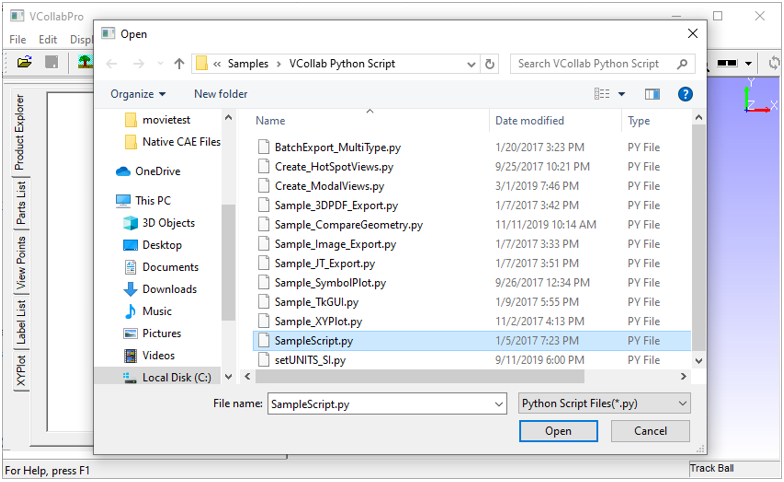

Import
VCollab users can import the following file types using the Import option:
Supported files and data
- *.py (python script file to run set of commands)
- *.csv (User defined result file )
- *.vpt (Viewpoints file)
- *.cax (Result data from cax file)
Importing Python script file
Launch VCollabPro application.
Click File | Import option.
Under Files of Type, select Python Script Files (* .py).

Select a python script file.
Click Open to run the script.
Importing viewpoints
- Launch VCollabPro application.
- Load a CAX (*.cax) file
- Click File | Import option.
- Select Files of Type as VCollab Files (*.vpt) or VCollab Files (*.cax).
- Select a file.
- Click Open to import all view paths from the external file.
Importing CAE Results
VCollab Pro supports importing of external CAE results from CSV files. These results are added as new results or instances of existing results. VCollab Pro imports results only for the visible parts based on node or element numbers
Sample CSV File
#VCOLLAB_RESULTS
Node,Displacement,Stress,
Vector,Tensor,
#INSTANCE,L1M1,Label:Step1,Time:0.1
1818,0.000000,0.000000,0.000000,0.401617,-0.543105,-0.496605, 0.016011,1.541499,-0.090037,
1848,0.000000,0.000000,0.000000,-0.330866,-0.389335,-0.527343,-0.010698,1.284187,-0.019899,
1845,0.000000,0.000000,0.000000,-0.486035,-0.668757,-0.667392,-0.024487,1.603551,-0.030750,
#INSTANCE,L2M1,Label:Step2,Time:0.2
1818,-0.543105,-0.496605, 0.016011,1.541499,0.000000,0.000000,0.000000,0.401617,-0.090037,
1848,-0.010698,1.284187,-0.0198990.000000,0.000000,0.000000,-0.330866,-0.389335,-0.527343,
1845,0.000000,0.000000,-0.486035,-0.6687570.000000,0.000000,0.000000,-0.486035,-0.668757,
CSV File Format
Line No Description Example 1 #VCOLLAB_RESULTS Header line to identify VCollab CSV format. 2 Node/Element, Result1, Result2,.... Use Node for nodal result and Element for elemental result. All results should be of same type. 3 Result Types for each result. Scalar / Vector / SixDof / Tensor For complex results: Scalr_RI / Vector_RI / SixDof_RI / Tensor_RI 4 #INSTANCE, [Instance_name1], Instance attributes Each attribute should have key and value separated by ':' For example, Time: 1.0, Label:Step-1, 5 node/element ID value1, value2, value3,.... 6 node/element ID value1, value2, value3,.... 7 node/element ID value1, value2, value3,.... ... #INSTANCE, [Instance_name2],Instance attributes Multiple instances are supported ... ... ... ... node/element ID value1, value2, value3,.... ... node/element ID value1, value2, value3,.... ... node/element ID value1, value2, value3,.... ... Note
From VCollab Pro 19.0, CSV format is modified to support multiple instances and complex results. Old format is also supported.
Result Types
Number of columns in the CSV file is based on the result type. For example, Vector result is expected to have 3 columns. Refer to the table below for the different result types and their corresponding number of columns.
Supported Result Types Number of Columns (Components) Scalar 1 Vector 3 SixDof 6 Tensor 6 Scalar_RI 2 Vector_RI 6 SixDof_RI 12 Tensor_RI 12 *For complex results first set is real, followed by imaginary set. Note
Import CSV results may not work for features like cut section, iso-surface, etc.
Python API Support
VCollab Pro provides the following methods to export and import result instances.
- xExportCAEResult(ouput_file_path, result_list,instance_list, precision, scientific_format);
- xImportCAEResult(csv_file_path);
Refer to VCollab Pro API manual available in the local installation folder for usage and syntax.
Steps to import CAE result files
- Launch VCollab Pro application.
- Load a CAX (*.cax) file
- Click File | Import option which opens a file browser dialog box
- Under Files of Type select Result Files (*.csv)
- Select a VCollab Pro supported CSV file.
- Click Open to import all CAE results.
- Check CAE | Results List for the result name / instance name.